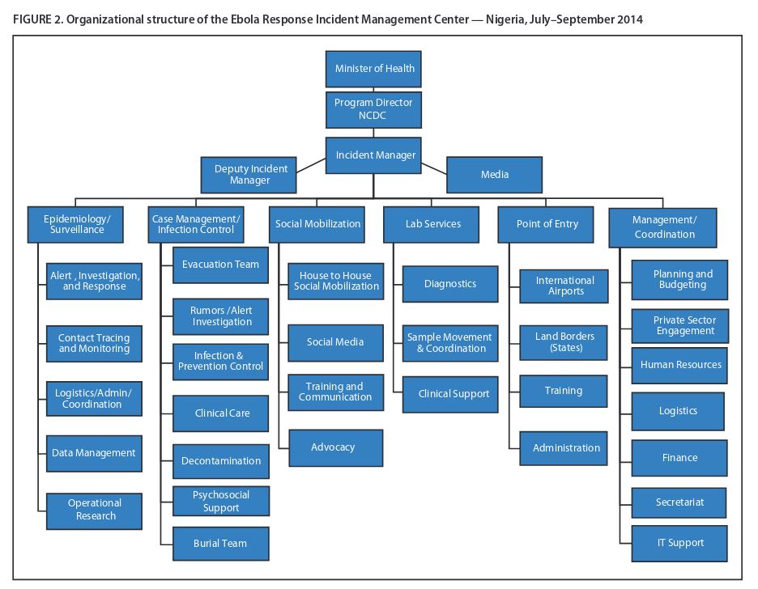

“The role of community-based service organisations in the humanitarian response to infectious disease crises in vulnerable populations of sub-Saharan Africa”
for MGMT-5090 ‘Crisis Management and Emergency Preparedness’ (Harvard University) by Arnold M. Howitt
Introduction
Infectious disease epidemic crises have repeatedly challenged the nations and peoples of sub-Saharan Africa. From HIV (1990s – 2000s) to tuberculosis to Ebola (2014 – 2016) and COVID-19 (2020 – 2022), each emergent crisis – sometimes originating in Africa, sometimes part of wider global pandemic and sometimes overlapping each other – has presented novel and life-threatening landscape-scale threats to communities throughout sub-Saharan Africa (Hasan et al., 2022; Kimani et al., 2020). Each infectious disease crisis has been characterised by novel difficulties in collecting information to inform situational awareness, sense-making, difficulties in formulating, implementing and adapting effective management plans, difficulties in disseminating information, public fear and widespread social and economic impacts (Kevany et al., 2012). Like other crises, infectious disease crises occur in an environment where no one is expert on all aspects (Boin et al., 2016; Leonard & Howitt, 2009b).
Effective healthcare response to infectious disease depends on the deployment of an available, well-trained and well-informed healthcare workforce. However, many countries in sub-Saharan Africa are – and have been – lacking in adequate healthcare resources (Cancedda et al., 2016; Paterson & Widner, 2017). Weak governments, stagnant economies and neo-liberal policies have resulted in reduced expenditure on social services, such as healthcare (Okma et al., 2016). The publicly-funded health sector often has weak governance and management systems (International Rescue Committee, 2016). Developing countries in Africa have limited resources to implement welfare and anti-poverty measures to mitigate the economic and social effects of an infectious disease epidemic and the adverse consequences of epidemic control measures (Gutierrez-Romero, 2020). As the result of gaps – even during the absence of epidemic infections – in government-provided social services community-based (CBO) and other non-government (NGO) organisations have arisen to provide those services (Hushie et al., 2021; Okma et al., 2016).
As well as inadequate resources to manage the health, social and economic impacts of infectious disease epidemic crises, developing countries of sub-Saharan Africa face pre-existing endemic poverty (Gutierrez-Romero, 2020). With poverty comes many other high-priority health concerns, such as high rates of maternal and child mortality, chronic malnutrition and low levels of education (Sasidharan & Dhillon, 2021, p. 19). These other concerns divert attention away from infectious disease epidemic crises (Carstensen et al., 2021).
Infectious disease epidemics can, however, be anticipated. An increasing number of infections, often zoonotic, have crossed over into humans in the past two decades, and an increasing number of infections are expected to do so (Dvorak & Phred, 2020).
Since infectious disease epidemics and their health and social consequences can be anticipated and since community-based organisations (CBOs) already provide social and healthcare services then CBOs could potentially be well-positioned to assist in epidemic crisis responses.
It is increasingly recognized that response to major crises requires a whole of community engagement. Government organisations need to partner effectively with private, non-profit and community-based organisations to complement the public sector’s own capabilities (Bedson et al., 2020; Boin et al., 2016).
This article will examine past and potential contributions of community-based organisations to the humanitarian response to infectious disease crises affecting vulnerable populations in sub-Saharan Africa.
Benefits of involving CBOs in crisis response
Local knowledge
Community-based organisations (CBOs) typically have local knowledge and presence, both before and after healthcare crises (Carstensen et al., 2021; Kieffer-Døssing, 2020). Already adapted to local conditions, they potentially have local situation awareness and insight into cultural beliefs. In particular, CBOs may have been established to assist or represent the interests of disadvantaged and powerless groups e.g. people living in informal settlements (slums), people living with HIV or sex-workers (Carstensen et al., 2021; Kimani et al., 2020).
Diversity
A diversity of observations, opinions and approaches – different to that of larger organisations and government organisations – has the potential to improve situational awareness and provide effective response to complex humanitarian problems (Clarke, 2013).
Providing diversity of observation and opinion includes providing feedback on proposed interventions as applicable to specific people groups. CBOs can potentially monitor and anticipate unexpected and adverse consequences of policy through a feedback loop (Kevany et al., 2012). For example, the advice to wash hands for twenty seconds to reduce the spread of COVID-19 provoked the response from a leader of a small community-based organisation in Kenya “Running water for 20 seconds! When we don’t have even enough drinking water as it is” (Carstensen et al., 2021). CBOs have the potential to enable or adapt responses to local conditions e.g. establishing hand-washing stations and exploring methods to wash hands with less water. The smaller size of CBOs may enable CBOs to respond more quickly and flexibly to crises than larger organisations (Hushie et al., 2021; Kieffer-Døssing, 2020).
Customising the message
CBOs can also customise and distribute messages into the local language and style of communication e.g. storytelling (Clulow et al., 2020; Ebola Outbreak, Sierra Leone, 2015; Kieffer-Døssing, 2020). Girls in Kibera, Nairobi, Kenya (and, later, elsewhere in East Africa) adopted the small multi-coloured ‘spike’ haircut to publicize COVID-19 (Carstensen et al., 2021). CBOs also countered local rumours e.g. regarding which populations were or weren’t vulnerable to COVID-19 and rumours about treatments (Carstensen et al., 2021).
Mobilise and empower
If they have strong connections to the community, CBOs can mobilise and empower communities through recruitment and training of local staff to aid in humanitarian response and public education (Hushie et al., 2021; Paterson & Widner, 2017). Spontaneous local womens’ groups in Burkina Faso – after training – went door-to-door raising awareness of COVID-19 related hygiene measures (Carstensen et al., 2021).
CBOs with a good community relations can improve co-operation and trust between the community and public authorities (e.g. hospitals) or non-governmental service providers (Hushie et al., 2021). Particularly if the infection or interventions to prevent or control infection are contentious from a social, cultural or religious perspective e.g. HIV-AIDS (Kevany et al., 2012). There may be new and developing therapies for treating infectious disease, but there may be high levels of community distrust in novel therapies. Communication between communities and bodies employing new therapies can help reduce that distrust (Bedson et al., 2020).
CBOs can provide an advocacy role for the community with the government authorities and other organisations (Carstensen et al., 2021).
Resources
CBOs in sub-Saharan Africa have potential access to raise additional funds, both internationally and locally, other than what is available to the public authorities (Carstensen et al., 2021; Hushie et al., 2021; Kimani et al., 2020).
Behaviour and iterative change
Behaviours drive infectious epidemic emergence and transmission. Crisis mitigation measures include enabling and reinforcing behaviour changes which reduce the spread of disease. Behaviour change education has traditionally been a one-way disease-focused communication from centralized experts (Bedson et al., 2020). However, this may ineffective. For example, restrictions on movement and congregation may be considered a religious problem rather than a health problem in the Niger. Or closing schools may result – in some communities – in children gathering at the local river (Kieffer-Døssing, 2020).
Communities can change behaviours, but need to be aware of the danger requiring behaviour change and mitigation strategies need to be available and palatable. This can be done through a two-way participatory learning and action approach to both create the ‘demand’ for behaviour change and the ‘supply’ of practical and realistic culturally-appropriate strategies (Bedson et al., 2020; Participatory Learning and Action, 2017). Development of strategies appropriate for the community – guided by standardized, but flexible, operational processes – can be done iteratively through questions such as (from Bedson et al., 2020):
1. What are the most commonly expressed disease-related concerns expressed by community members?
2. What were the most commonly asked questions by community members?
3. What did the community initially assess and rank as key risks for contracting the disease?
4. What actions or by-laws have been (or can be) developed on the disease in this community?
Through iterations of consultation, monitoring, evaluation and feedback, community-based strategies can evolve over time to time-appropriate or more effective strategies e.g. from restricting movements into and out of a community to health surveillance of the community itself (Bedson et al., 2020).
In an HIV-intervention program working in sites including in South Africa, Tanzania and Zimbabwe, those sub-programs which included community consultation and participation (including consultation and operational co-operation with community-based organisations) had ten times higher intervention uptake compared to ‘control’ programs which did not have local adaptation (Kevany et al., 2012).
Challenges
Different modes of operation
Crisis response is not the routine business of CBOs. Crisis response requires a different mode of operation to ‘business as usual’. For example, both public and private organisations typically devote more resources towards activities and few resources to gathering information required to detect or monitor a potential crisis (Boin et al., 2016). Staff, staff training, overall strategy and funding of CBOs are often all oriented and linked to typical development goals. This slows the ability of CBOs to provide crisis response services (International Rescue Committee, 2016). As a result, a CBO, like other organisations, may have difficulty flexibly adapting to needs of a crisis response (Leonard & Howitt, 2009b).
CBOs usual services, e.g. education, welfare support, may be disrupted by infectious disease measures. For example, awareness and educational programs, e.g. focusing on keeping girls in school and sexuality education, helped decrease HIV rates among African countries. However, during the COVID-19 epidemic, there was reduced HIV testing and ARV initiation in South Africa and even reduced access (50%) to ARV – for those already on ARV treatment – in Kenya (Hasan et al., 2022). CBOs may need to take measures to adapt the provision of their usual services e.g. distribution of printed education material in South Africa (Clulow et al., 2020).
Communication and co-operation
The role and services provided by any individual CBO may be relatively narrow in scope and not reflect the comprehensive response required to a crisis (Carstensen et al., 2021). A CBO’s crisis response will often need to be supported and informed by expert external organisations.
However, CBOs may have poor linkages and information sharing with government, other large non-governmental organisations and other CBOs, reducing their ability to co-ordinate a comprehensive response. Government organisations may even be unwilling to acknowledge the potential or actual role of non-governmental organisations in crisis management and recovery (Colten et al., 2008).
Even worse, a multiplicity of organisations can result in confusing and contradictory messages. CBOs encompass a wide variety of organisations, each with different priorities, expertise and capacity (Hushie et al., 2021). Behavioural change interventions are most likely to be effective if communication channels (world-of-mouth, social media, meetings, mass media) are co-ordinated with and in support of government policies (Bedson et al., 2020). This co-ordination between CBOs and government can be improved by preparing – prior to a crisis-response – for CBO consultation, co-ordination and feedback directed towards adapting the crisis response (Kevany et al., 2012).

Co-ordination of government, NGOs and international aid can be assisted by the a national Incident Management System (IMS) e.g. for recruiting and training required staff, supplying required equipment, ensuring treatment centres are safe and co-ordination of systems (Paterson & Widner, 2017). Incident management systems used during Ebola outbreaks in Liberia, Nigeria and elsewhere supported flexible responses allowing decentralised co-ordination and operations sensitive to local conditions (Brooks, 2016; Fallah et al., 2016; Olu et al., 2016; Shuaib et al., 2014). IMS can be implemented in low-resource settings such as Liberia, among organisations with little familiarity with IMS and during times of infectious disease crisis (Pillai et al., 2014).
Limited resources and sustainability
CBOs operating in a crisis environment can rapidly exhaust their limited resources (Carstensen et al., 2021). Though CBOs are well-placed to recruit community volunteers, the attrition and turnover rate of community volunteers can be high. Attrition can be reduced by appropriate compensation, perhaps funded by government or international agencies (Bedson et al., 2020).
Long-term sustainability of community-based mitigation measures is characterised by ongoing, continuously monitored actions with feedback e.g. monitoring of cases and morbidity, rather than one-off action items e.g. initial installation of a hand-washing station (Bedson et al., 2020).
Conclusion
Like most other organisations, community-based organisations in sub-Saharan Africa are typically not oriented towards crisis response. Much can be done to prepare and strengthen CBOs to be part of a decentralized crisis response which is coordinated with government (Clarke, 2014; Leonard & Howitt, 2010b). Community-based organisations can provide a flexible, localised and adaptive responses to epidemic crises and ultimately strengthen community resilience, even in the absence of crisis.